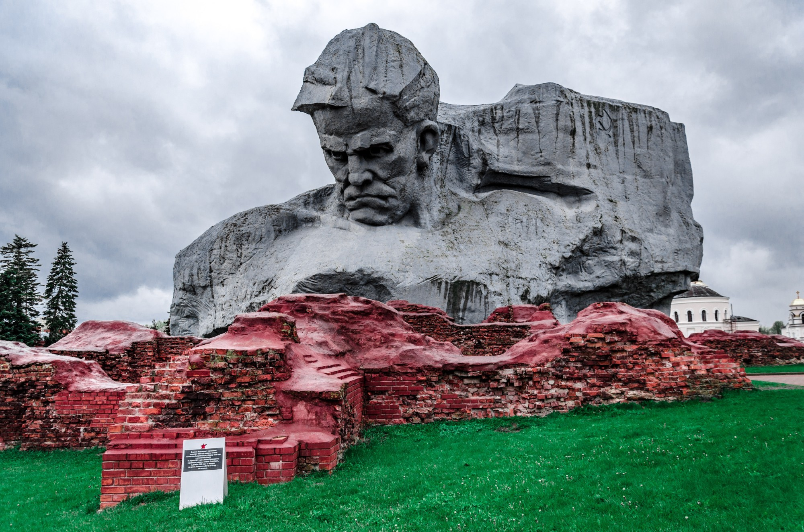
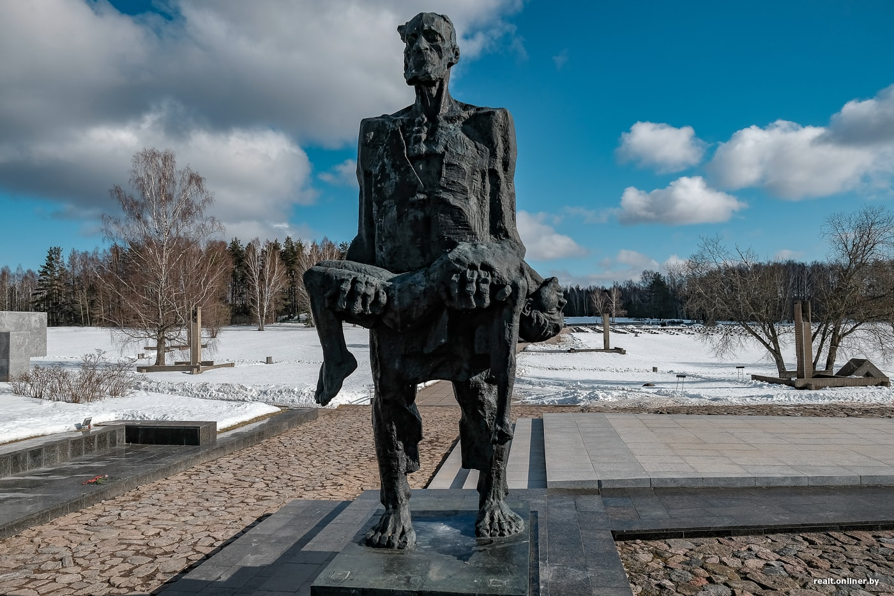

Несвижский замок |
Мирский замок |

Брестская крепость |
Хатынь |
|
||
|
Несвижский замок — дворцово-замковый комплекс, находящийся в северо-восточной части города Несвижа в Минской области Белоруссии, памятник архитектуры XVI—XVIII веков. |
Мирский замок — оборонительное укрепление и резиденция в городском посёлке Мир. |
Список деревень Из 9200 населённых пунктов,разрушенных и сожжённых немецкими оккупантами и коллаборационистами в Белоруссии во время Великой Отечественной войны, свыше 5295 были уничтожены вместе со всем. |
 |
Хатынь стала символом массового уничтожения мирного населения, осуществлявшегося нацистами и коллаборационистами на оккупированной территории СССР. |
||
Что посмотреть |
Мирский замок |
Хаты́нь — деревня в Белоруссии, уничтоженная 22 марта 1943 года карательным отрядом в качестве мести за убийство нескольких немецких военнослужащих |
||||